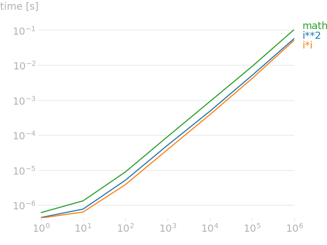

Python Benchmarking With perfplot
You can use the perfplot library to compare the benchmark execution time of functions whose behavior varies in proportion to the size of the input arguments.
Line plots are used to compare the execution time of functions with different sized input arguments.
In this tutorial, you will discover how to benchmark Python code using the perfplot open-source library.
Let's get started.
What is perfplot
The perfplot project is a Python library for benchmarking.
It was developed by Nico Schlömer and is available as open source on GitHub.
perfplot extends Python's timeit by testing snippets with input parameters (e.g., the size of an array) and plotting the results.
-- perfplot, GitHub Project.
The perfplot library extends timeit and allows functions whose performance changes or scales with input arguments to be compared directly.
It is designed to compare individual functions, although snippets can be compared if they can be re-stated as a function or a lambda.
The library is used via its Python API and provides line plots allowing functions to be compared based on their benchmark results with different inputs.
Now that we know about the perfplot project, let's look at how we can use it.
How to Use perfplot
Using the perfplot library for benchmarking involves two steps, they are:
- Install perfplot
- Run benchmarks
Let's take a closer look at each in turn.
1. Install perfplot
The first step is to install the perfplot library.
This can be achieved using your favorite Python package manager, such as pip.
For example:
pip install perfplot2. Run benchmarks
The next step is to run benchmarks.
This requires defining the functions that are to be compared. Each function should take the same argument and the behavior of each function is expected to vary in proportion to the argument.
Once defined, we can run the benchmark.
This can be achieved via the perfplot.bench() function that takes all of the details of the functions to be compared and their arguments and returns an object that allows results to be plotted.
For example:
...
# perform benchmark
results = perfplot.bench(...)
# plot the results
results.show()Alternatively, the perfplot.show() function takes the same arguments and will perform the benchmark and plot the results.
For example:
...
# perform benchmark and plot the results
perfplot.show(...)Both functions take the same key arguments as well as many arguments to control the properties of the plot of results.
For example (my best guess at parameter definitions):
- "setup": specifies a function that returns arguments for a test number/value.
- "kernels": specifies a list of functions to compare.
- "labels": specifies human-readable names of functions that are being compared.
- "n_range": specifies the range of test numbers to perform, often the function arguments directly.
- "xlabel": specifies the human-readable name for the x-axis.
For example, the example below compares func1 and func2 that take one integer argument. The arguments compared are [1, 2, 3] and the setup function will return each integer value directly to the target function without any transform.
...
# perform benchmark and plot
perfplot.show(setup=lambda n: n, kernels=[func1, func2],
labels=["First", "Second"], n_range=[1, 2, 3],
xlabel="Size")
A line plot is then created showing how the execution time of each function varies with the different input values.
Now that we know how to use the perfplot library for benchmarking, let's look at a worked example.
Example of Benchmarking with perfplot
We can explore how to use the perfplot library to benchmark and compare functions.
In this case, we will define three functions that create lists of squared integers. Each function creates the list using a list comprehension that scales with the size of the input argument.
The calculation of the squared integer is performed in three different ways, via the power operator, multiplication operator, and the math.pow() function.
# square using power operator **
def power_operator(size):
return [i**2 for i in range(size)]
# square using multiplication operator *
def multiplication(size):
return [i*i for i in range(size)]
# square with math.pow()
def power_function(size):
import math
return [math.pow(i,2) for i in range(size)]
We will then benchmark each of these functions and plot the results with the perfplot.show() function.
Input arguments to each function are specified via the "n_range" argument with values from 0 to 1,000,000 in powers of 10.
The "setup" argument receives each test value from the "n_range" and returns them directly.
The "kernels" argument specifies the list of three functions to compare and the "labels" argument gives each a human readable name.
...
# perform benchmark and plot
perfplot.show(
setup=lambda n: n,
kernels=[power_operator, multiplication, power_function],
labels=['i**2', 'i*i', 'math.pow'],
n_range=[10**i for i in range(7)],
xlabel="size")
Tying this together, the complete example is listed below.
# SuperFastPython.com
# example of benchmarking python with perfplot
import perfplot
# square using power operator **
def power_operator(size):
return [i**2 for i in range(size)]
# square using multiplication operator *
def multiplication(size):
return [i*i for i in range(size)]
# square with math.pow()
def power_function(size):
import math
return [math.pow(i,2) for i in range(size)]
# perform benchmark and plot
perfplot.show(
setup=lambda n: n,
kernels=[power_operator, multiplication, power_function],
labels=['i**2', 'i*i', 'math.pow'],
n_range=[10**i for i in range(7)],
xlabel="size")
Running the example benchmarks the execution time of each function with each input argument.
A progress bar is used to report the progress of the function benchmarking.
Overall ━━━━━━━━━━━━━━━━━━━━━━━━━━━━━━━━━━━━━━━━ 100% 0:00:00
Kernels 0% 0:00:02
Finally, a plot is created and shown.
The plot shows how the execution time of each function increases with the size of the input arguments, as we would expect.
The input argument on the x-axis increases by orders of magnitude and similarly the execution time on the y-axis increases by orders of magnitude.
All three functions show the same smooth increase in execution time in proportion to the size of the input argument.
We can see that math.pow() has the largest times, followed by the power operator, and that the multiplication operator is the fastest for each input argument.
This highlights how we can use the perfplot library to visually compare the execution time of functions whose behavior varies with the size of input arguments.

Takeaways
You now know how to benchmark Python code using the perfplot open-source library.
If you enjoyed this tutorial, you will love my book: Python Benchmarking. It covers everything you need to master the topic with hands-on examples and clear explanations.